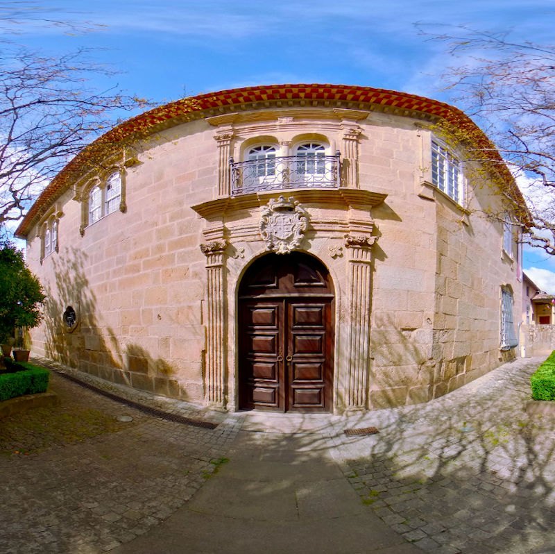
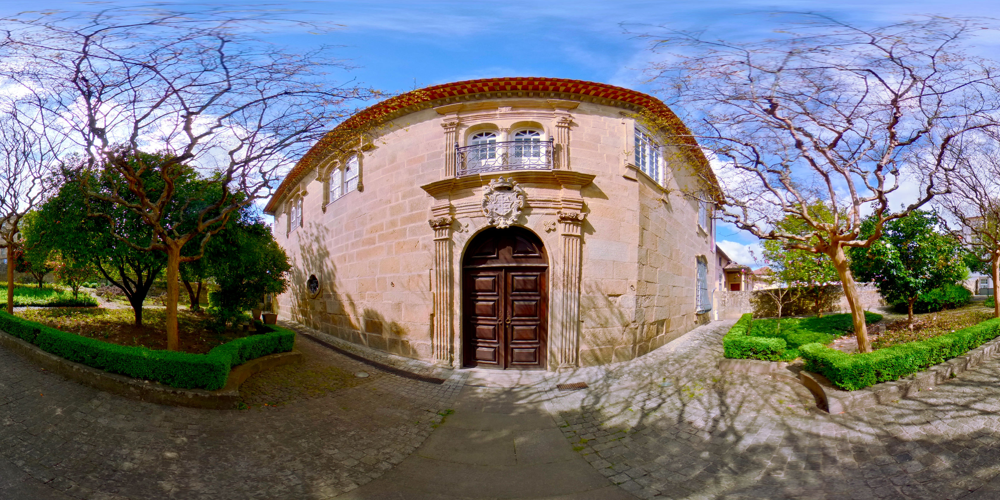
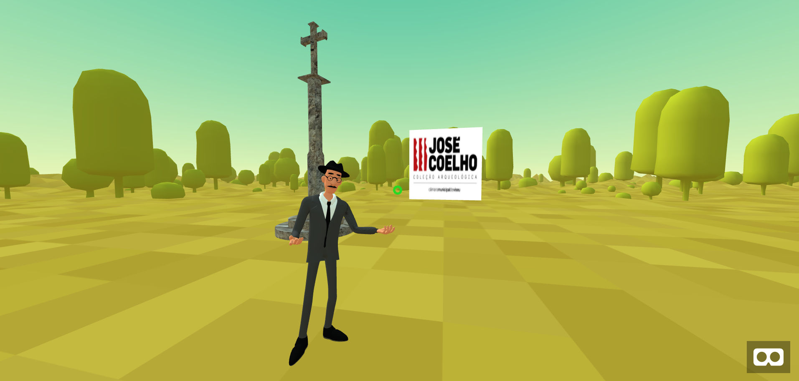

Sobre o PAV360
O PAV360 é um projeto do Polo Arqueológico de Viseu (PAV).
O Polo Arqueológico de Viseu (PAV) é o centro operacional da Câmara Municipal de Viseu para a Arqueologia. Agrega os recursos dedicados a esta área e promove o interesse sobre o património arqueológico enquanto objeto de investigação e elemento de fruição cultural.



Os nossos contactos...
A equipa do PAV pode ser contactada de várias formas. Envia um email e prometemos que será mesmo lido por uma pessoa que responderá logo que possível ;)
Polo Arqueológico de Viseu
Casa do Miradouro
Largo António José Pereira
Viseu 3500-080 Portugal
Telefone 232 425 388
Email casadomiradouro[AT]cmviseu[DOT]pt